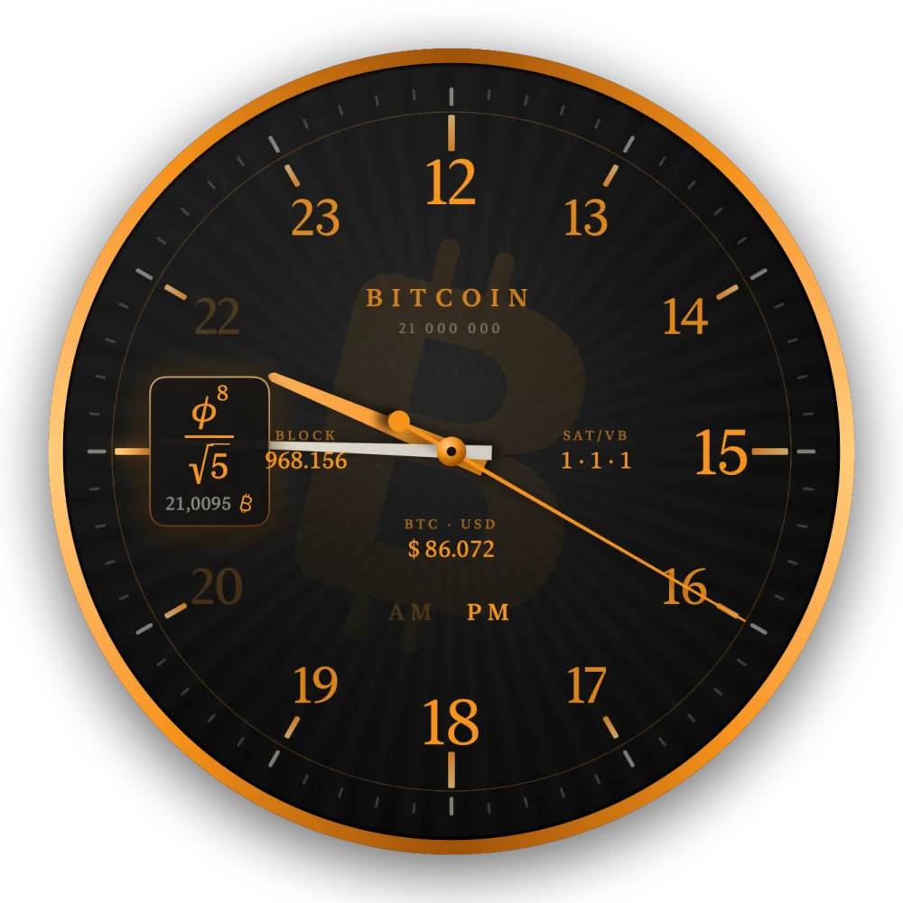
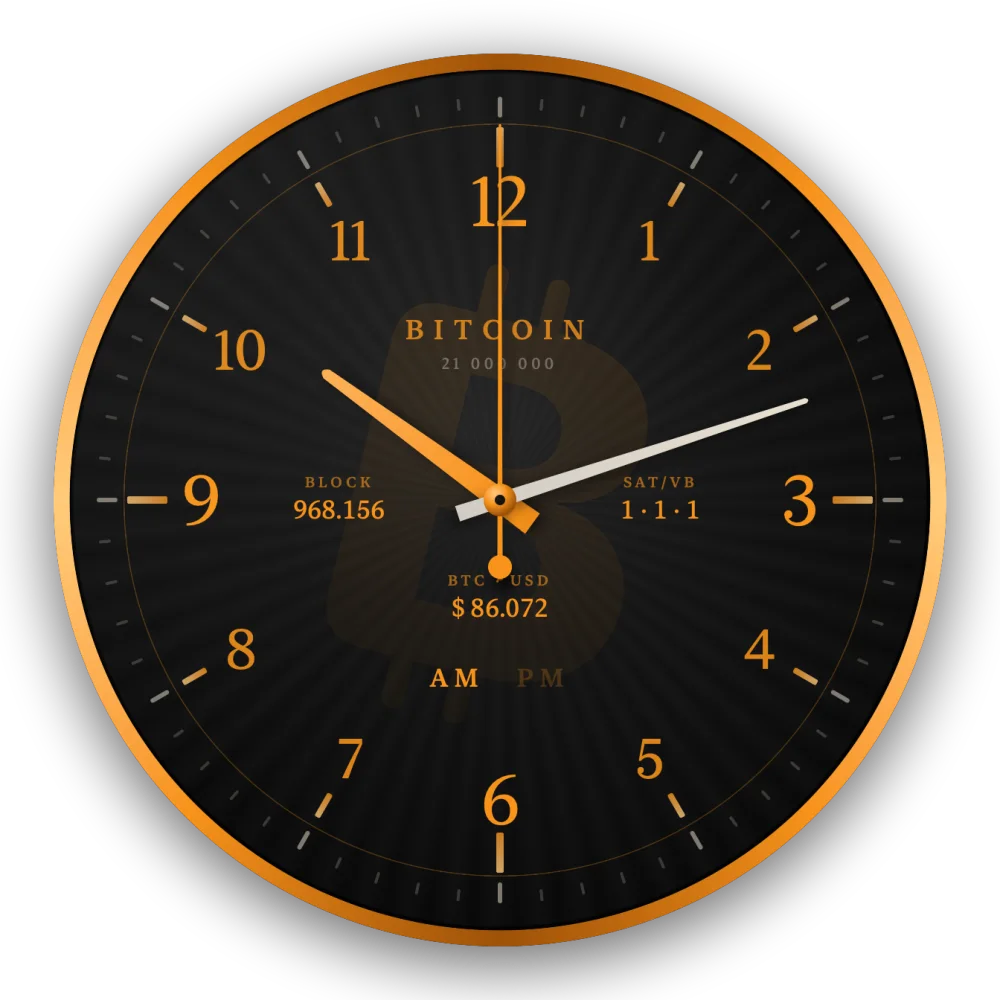
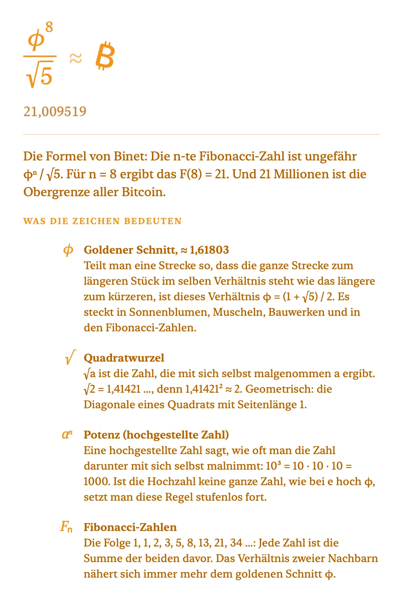
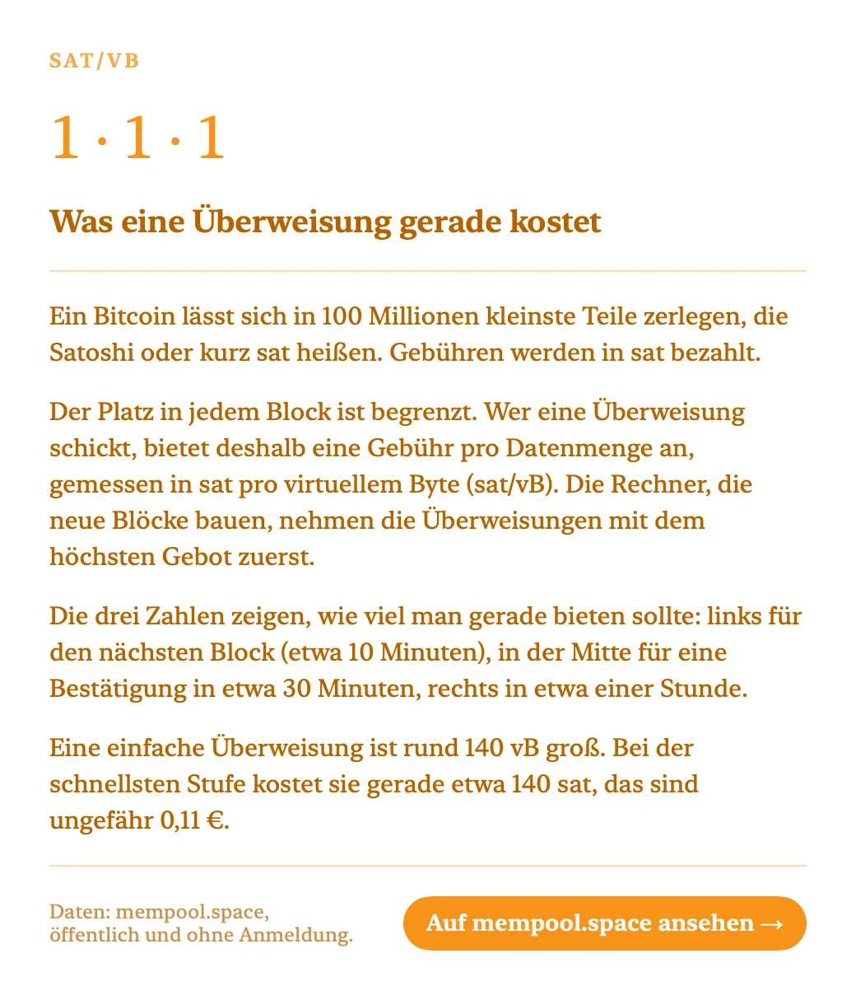

Zeit, in
Bitcoin-Orange.
Die Bitcoin-Uhr ist eine analoge Schreibtischuhr für den Mac. Auf den Stundenmarken erscheinen Formeln, deren Wert gerundet die Stunde ergibt, um 21 Uhr steht das ₿, und auf dem Blatt laufen Blockhöhe, Gebühren und Kurs von mempool.space mit.
macOS 14 oder neuer · Apple Silicon & Intel · MIT-Lizenz

Worum es geht
Eine Uhr, die man lesen lernt.
Die Idee stammt von einer „mathematischen Uhr“, die im Netz kursierte: zwölf Formeln statt zwölf Zahlen. Daraus wurde eine Uhr für Bitcoiner — mit 24 Formeln, dem ₿ an der Stelle der 21 für die 21 Millionen, und einem Blick auf das, was im Netzwerk gerade passiert.
Was sie kann
Sechs Dinge, die sie macht.
Sie liegt als randloses Fenster auf dem Schreibtisch, über den Symbolen und unter allen Programmfenstern. Oder auf Wunsch über allem.
12 Stunden mit AM und PM
Vormittags stehen 1 bis 11 auf dem Blatt, nachmittags 13 bis 23 — oben immer die 12. Nachmittags steht an der Stelle der 9 das ₿ für 21 Uhr. Unten zeigt die Uhr, ob gerade AM oder PM ist.
Formeln auf den 5-Minuten-Strichen
Steht der Minutenzeiger genau auf einem Strich, verwandelt sich die Zahl dort für diese Minute in eine Formel mit ihrem Wert, etwa e^π − π ≈ 20 oder φ⁸/√5 ≈ 21. Danach wird sie wieder zur Zahl.
Live-Daten von mempool.space
Vier Plätze auf dem Blatt zeigen als schlichten Text wahlweise Blockhöhe, Gebühren, Kurs in USD oder EUR, wartende Transaktionen, Blöcke bis zum Halving oder die nächste Difficulty-Anpassung.
Alles wird erklärt
Ein Klick auf eine Formel erklärt sie Schritt für Schritt, samt jedem Zeichen darin — π, e, φ, Bogenmaß. Ein Klick auf Blockhöhe oder Kurs erklärt in einfacher Sprache, was die Zahl bedeutet.
Per Rechtsklick einstellbar
Größe, Sekundenzeiger, Formeln, Wasserzeichen, AM/PM, jede der vier Anzeigen, wie oft sie aktualisiert werden, ob die Uhr über allen Fenstern liegt und ob sie beim Anmelden startet.
Praktisch keine Last
Die Zeiger dreht Core Animation, also macOS selbst. Die App rechnet dafür nicht mit; im Betrieb misst man bei ihr 0 % CPU. Wer es noch sparsamer will, schaltet den Sekundenzeiger ab.
Bedienung
Vier Handgriffe, mehr gibt es nicht.
Die Uhr hat kein Fenster mit Knöpfen und kein Symbol im Dock. Alles läuft über die Maus direkt auf dem Zifferblatt.
Verschieben
Mit der linken Maustaste irgendwo auf die Uhr klicken und ziehen. Sie merkt sich ihren Platz, auch über einen Neustart hinweg.
Einstellen
Rechtsklick auf die Uhr öffnet das Menü. Jede Einstellung wirkt sofort und bleibt gespeichert.
Formel verstehen
Zu jeder vollen fünften Minute erscheint eine Formel. Draufklicken öffnet ein weißes Fenster mit Rechenweg und der Bedeutung jedes Zeichens.
Daten verstehen
Auf Blockhöhe, Gebühren oder Kurs klicken. Erst kommt eine Erklärung für Einsteiger, von dort führt ein Knopf auf Wunsch zu mempool.space.
Ansichten
Vormittags, nachmittags, auf Nachfrage.
Links 10:12 Uhr ohne Formel, rechts 21:45 Uhr: Der Minutenzeiger steht auf der 9, dort erscheint die Formel für 21. Die Oberfläche der App ist deutsch.



Die 24 Formeln
Jede ergibt gerundet ihre Stunde.
Die ersten zwölf stammen aus der Vorlage, 13 bis 24 sind für diese Uhr dazugekommen. Winkel in sec und csc stehen im Bogenmaß.
Installation
Selbst bauen, in einem Befehl.
Wie bei LibraryCompass gibt es bewusst keine fertige Programmdatei: ohne bezahltes Apple-Entwicklerprogramm ließe sie sich nicht notarisieren. Der Quellcode ist vollständig, das Skript baut, signiert ad hoc, installiert nach „Programme“ und startet die Uhr.
# Xcode-Befehlszeilenwerkzeuge, falls noch nicht vorhanden
xcode-select --install
# Quellcode holen, bauen, installieren, starten
git clone https://github.com/JoeMartinBTC/Bitcoin_clock.git
cd Bitcoin_clock
bash Scripts/build_local_app.shMitmachen
Baut sie weiter.
Die Uhr ist ein Anfang, kein fertiges Produkt. Wer eine Idee hat, soll sie bauen: Repository forken, ausprobieren, einen Pull Request schicken. Auch ein Issue mit einer guten Idee ist ein Beitrag. Der Code ist klein und in SwiftUI geschrieben, der Einstieg gelingt an einem Abend.
- Weitere Komplikationen: Hashrate, Sats pro Euro, Lightning-Kapazität, Zeit seit dem letzten Block
- Eine englische Oberfläche und weitere Sprachen
- Neue Formeln oder ganze Formelsätze zum Umschalten
- Andere Zifferblätter und Farben, etwa ein helles Blatt
- Ein echtes macOS-Widget für die Mitteilungszentrale
- Die Uhr als Bildschirmschoner oder als iPhone-App
- Ein Wecker, der zum nächsten Halving klingelt
- Eine eigene Node statt mempool.space als Datenquelle